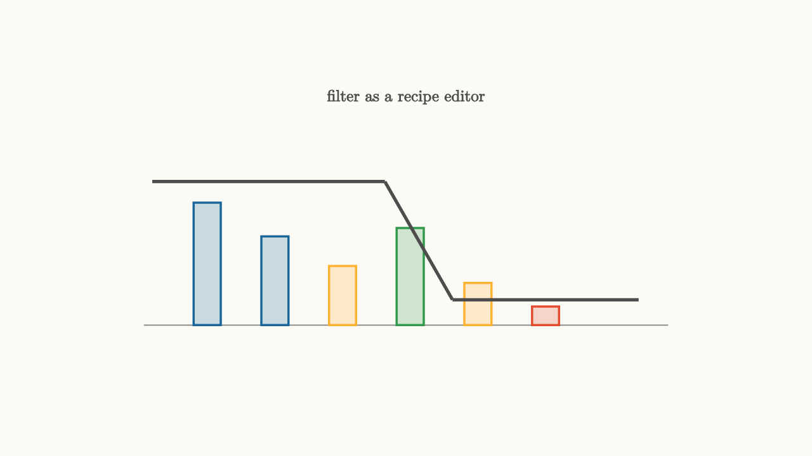

Filters Shape What A Signal Can Keep
A signal can be viewed in time as a waveform, or in frequency as a recipe. The time view tells what happens moment by moment. The frequency view tells which rhythms are present.
A filter is a rule for editing that recipe.
Low-pass filters keep slow variation. High-pass filters keep changes. Band-pass filters keep a neighborhood around a chosen rhythm. Notch filters remove a narrow offender.

source
background = [0.985, 0.98, 0.955, 1]
camera = Camera(4.8b)
let Bar = |x, h, col| block {
. fill{alpha{0.22} col} stroke{col, 2} center{[x, -1.15 + h / 2, 0]} Rect([0.32, h])
}
mesh diagram = block {
. stroke{GRAY, 1} Line(start: [-3.1, -1.15, 0], end: [3.1, -1.15, 0])
. Bar(x: -2.35, h: 1.45, col: BLUE)
. Bar(x: -1.55, h: 1.05, col: BLUE)
. Bar(x: -0.75, h: 0.7, col: ORANGE)
. Bar(x: 0.05, h: 1.15, col: GREEN)
. Bar(x: 0.85, h: 0.5, col: ORANGE)
. Bar(x: 1.65, h: 0.22, col: RED)
. stroke{DARK_GRAY, 3} Line(start: [-3.0, 0.55, 0], end: [-0.25, 0.55, 0])
. stroke{DARK_GRAY, 3} Line(start: [-0.25, 0.55, 0], end: [0.55, -0.85, 0])
. stroke{DARK_GRAY, 3} Line(start: [0.55, -0.85, 0], end: [2.75, -0.85, 0])
. center{[0, 1.55, 0]} color{DARK_GRAY} Text("filter as a recipe editor", 0.68)
}
"spectrum edit"
play Fade(0.6)The key equation is still multiplication:
The input spectrum $X(j\omega)$ says what the signal contains. The frequency response $H(j\omega)$ says what the circuit keeps. The output spectrum is the product.
That product is simple to write and rich to interpret. A tiny value of $H$ near a frequency erases that ingredient. A value near one preserves it. A large value amplifies it. The phase of $H$ shifts the ingredient in time.
Filters should serve a purpose
Filtering is design, not decoration. A low-pass filter can remove sensor noise when the physical quantity changes slowly. A high-pass filter can remove DC offset before amplification. A band-pass filter can isolate a radio channel. A notch filter can remove power-line hum near 60 Hz in the United States.
Every filter spends something. Removing high frequencies also softens edges. Removing low frequencies also discards baseline information. Narrow band-pass filters can ring in time. Strong phase variation can smear pulses.
A good filter protects what matters for the task.
source
background = [0.985, 0.98, 0.955, 1]
camera = Camera(4.8b)
let Spectrum = |mode| block {
. stroke{GRAY, 1} Line(start: [-3.0, -1.1, 0], end: [3.0, -1.1, 0])
. fill{alpha{0.22} BLUE} stroke{BLUE, 2} center{[-2.2, -0.45, 0]} Rect([0.32, 1.3])
. fill{alpha{0.22} BLUE} stroke{BLUE, 2} center{[-1.35, -0.55, 0]} Rect([0.32, 1.1])
. fill{alpha{0.22} ORANGE} stroke{ORANGE, 2} center{[-0.45, -0.75, 0]} Rect([0.32, 0.7])
. fill{alpha{0.22} GREEN} stroke{GREEN, 2} center{[0.45, -0.3, 0]} Rect([0.32, 1.6])
. fill{alpha{0.22} ORANGE} stroke{ORANGE, 2} center{[1.35, -0.78, 0]} Rect([0.32, 0.64])
. fill{alpha{0.22} RED} stroke{RED, 2} center{[2.2, -0.98, 0]} Rect([0.32, 0.24])
}
"low pass"
mesh title = center{[0, 1.55, 0]} color{DARK_GRAY} Text("choose what the output should keep", 0.62)
mesh bars = Spectrum(mode: 0)
mesh mask = block {
. stroke{DARK_GRAY, 4} Line(start: [-3.0, 0.6, 0], end: [-0.65, 0.6, 0])
. stroke{DARK_GRAY, 4} Line(start: [-0.65, 0.6, 0], end: [0.1, -0.92, 0])
. stroke{DARK_GRAY, 4} Line(start: [0.1, -0.92, 0], end: [3.0, -0.92, 0])
}
mesh label = center{[0, -1.62, 0]} color{DARK_GRAY} Text("low-pass keeps the baseline and trend", 0.62)
play Fade(0.5)
"high pass"
mask = block {
. stroke{DARK_GRAY, 4} Line(start: [-3.0, -0.92, 0], end: [-0.2, -0.92, 0])
. stroke{DARK_GRAY, 4} Line(start: [-0.2, -0.92, 0], end: [0.65, 0.6, 0])
. stroke{DARK_GRAY, 4} Line(start: [0.65, 0.6, 0], end: [3.0, 0.6, 0])
}
label = center{[0, -1.62, 0]} color{DARK_GRAY} Text("high-pass keeps sudden change", 0.62)
play Trans(1.0)
play Fade(0.3)
"band pass"
mask = block {
. stroke{DARK_GRAY, 4} Line(start: [-3.0, -0.92, 0], end: [-0.8, -0.92, 0])
. stroke{DARK_GRAY, 4} Line(start: [-0.8, -0.92, 0], end: [0.0, 0.6, 0])
. stroke{DARK_GRAY, 4} Line(start: [0.0, 0.6, 0], end: [0.8, 0.6, 0])
. stroke{DARK_GRAY, 4} Line(start: [0.8, 0.6, 0], end: [1.6, -0.92, 0])
. stroke{DARK_GRAY, 4} Line(start: [1.6, -0.92, 0], end: [3.0, -0.92, 0])
}
label = center{[0, -1.62, 0]} color{DARK_GRAY} Text("band-pass keeps a channel", 0.62)
play Trans(1.0)
play Fade(0.3)The bars stay the same in the slideshow. The mask changes. That is the frequency-domain habit: first understand what the input contains, then choose a response that preserves the useful part.
Time and frequency trade places
There is a practical tension behind filter design. A sharp cutoff in frequency usually means a long impulse response in time. A short impulse response usually means a gentler transition in frequency.
You can feel this in audio. A very narrow filter can remove an annoying tone, but it may ring when the signal changes. In digital communication, a filter with a long impulse response can create tails that stretch across symbol times. In measurement systems, aggressive smoothing can delay the measurement enough to hurt control.
This is why filter specifications include several numbers:
- passband ripple, how much the desired band is allowed to vary
- stopband attenuation, how strongly rejected frequencies are reduced
- transition width, how quickly the response moves from passband to stopband
- phase or group delay, how much the filter shifts signal features in time
Those requirements pull against one another. The art is choosing the compromise that fits the system.
Circuits implement filters with stored energy
Resistors dissipate energy. Capacitors store energy in electric fields. Inductors store energy in magnetic fields. Filters arise from how those storage elements respond to time variation.
A capacitor acts like a low impedance at high frequency and a high impedance at low frequency. An inductor does the opposite. Combining them with resistors creates paths that favor some rhythms and discourage others.
This physical view keeps the frequency response grounded. The plot is the visible shape of energy storage, energy loss, and connection geometry. A filter is a circuit deciding which parts of a signal can remain coherent enough to matter.